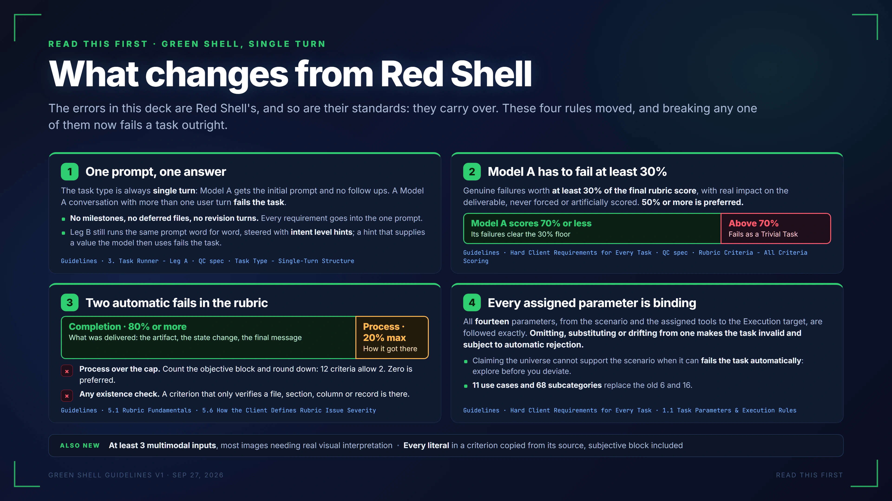

Red Shell examples on this slide · issues not to repeat in Green Shell
← → step through · Home End first and last · F full screen · each slide has its own link, #1 to #13
READ THIS FIRST · GREEN SHELL, SINGLE TURN
What changes from Red Shell
The errors in this deck are Red Shell's, and so are their standards: they carry over. These four rules moved, and breaking any one of them now fails a task outright.
1
One prompt, one answer
The task type is always single turn: Model A gets the initial prompt and no follow ups. A Model A conversation with more than one user turn fails the task.
No milestones, no deferred files, no revision turns. Every requirement goes into the one prompt.
Leg B still runs the same prompt word for word, steered with intent level hints; a hint that supplies a value the model then uses fails the task.
Guidelines · 3. Task Runner - Leg A · QC spec · Task Type - Single-Turn Structure
2
Model A has to fail at least 30%
Genuine failures worth at least 30% of the final rubric score, with real impact on the deliverable, never forced or artificially scored. 50% or more is preferred.
Model A scores 70% or less
Its failures clear the 30% floor
Above 70%
Fails as a Trivial Task
Guidelines · Hard Client Requirements for Every Task · QC spec · Rubric Criteria - All Criteria Scoring
3
Two automatic fails in the rubric
Completion · 80% or more
What was delivered: the artifact, the state change, the final message
Process · 20% max
How it got there
×
Process over the cap. Count the objective block and round down: 12 criteria allow 2. Zero is preferred.
×
Any existence check. A criterion that only verifies a file, section, column or record is there.
Guidelines · 5.1 Rubric Fundamentals · 5.6 How the Client Defines Rubric Issue Severity
4
Every assigned parameter is binding
All fourteen parameters, from the scenario and the assigned tools to the Execution target, are followed exactly. Omitting, substituting or drifting from one makes the task invalid and subject to automatic rejection.
Claiming the universe cannot support the scenario when it can fails the task automatically: explore before you deviate.
11 use cases and 68 subcategories replace the old 6 and 16.
Guidelines · Hard Client Requirements for Every Task · 1.1 Task Parameters & Execution Rules
ALSO NEW
At least 3 multimodal inputs, most images needing real visual interpretation · Every literal in a criterion copied from its source, subjective block included
GREEN SHELL GUIDELINES V1 · SEP 27, 2026
READ THIS FIRST